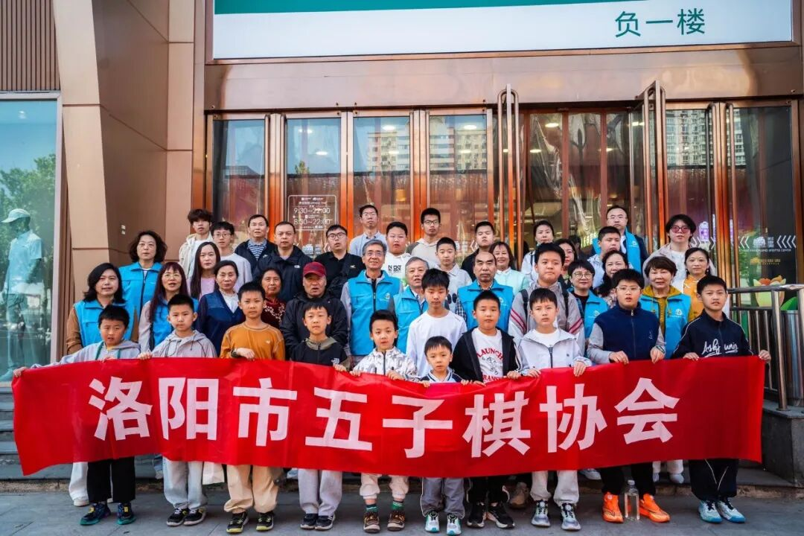
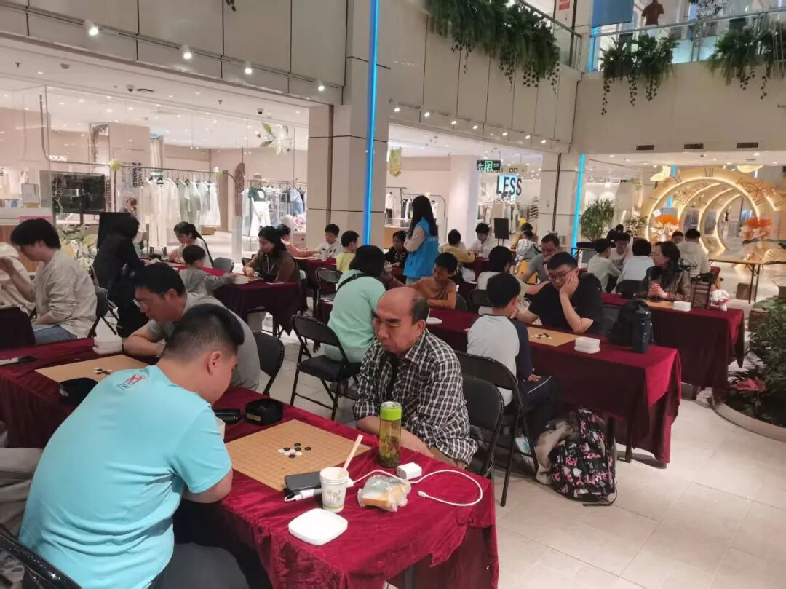
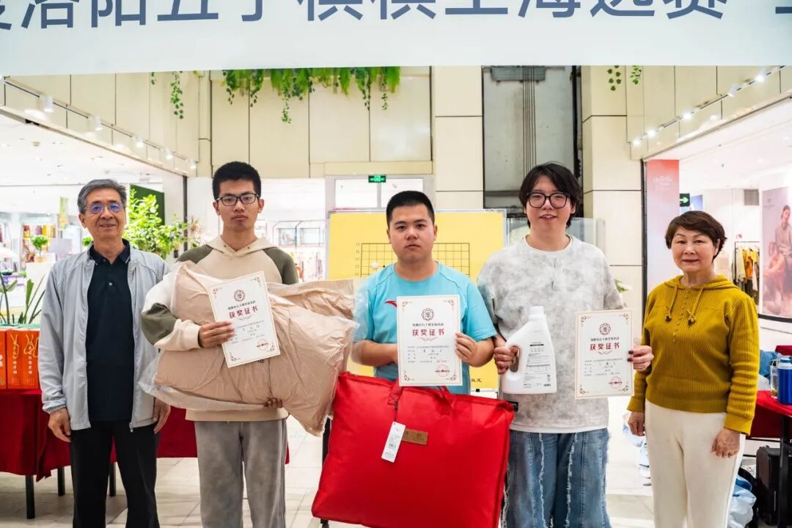
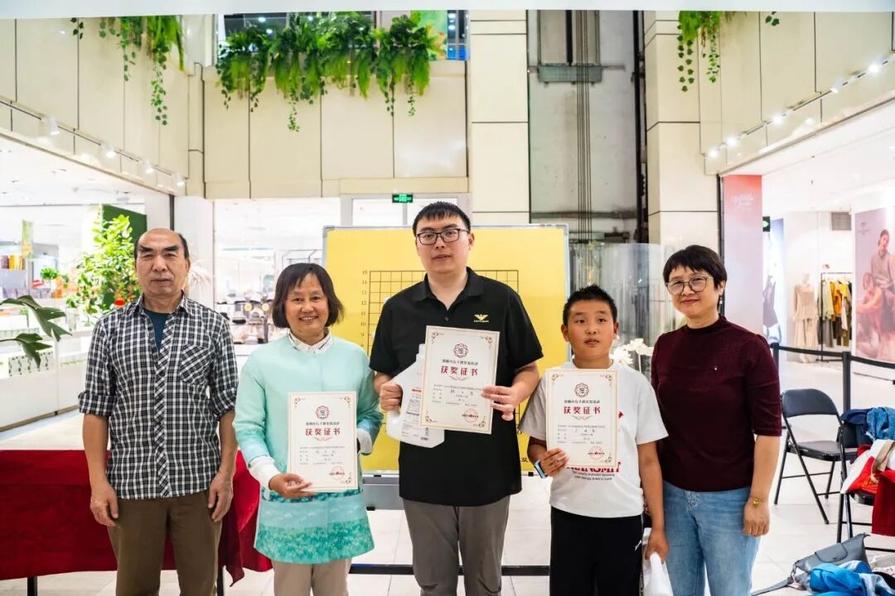
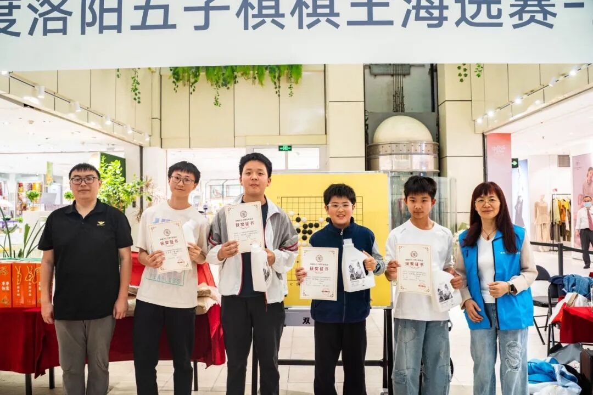

牡丹时节，三赛同开
2026年度洛阳五子棋棋王海选赛王府井站收官
正值第43届中国洛阳牡丹文化节期间，洛阳市五子棋协会在西工王府井百货成功举办“2026年洛阳五子棋棋王海选赛王府井站”比赛。本次赛事吸引了众多五子棋爱好者踊跃参与，其中不乏高校大学生专程赶赴参赛，更有国际象棋高手跨界挑战，围棋教师带队前来切磋交流，赛场氛围热烈非凡。

三赛同开，精彩纷呈
本次比赛共设公开组、无级组、双人联棋三个组别，三级赛事同时展开角逐。经过一天的激烈对弈，各组别三甲名单正式出炉。

公开组：二段高手折桂
公开组冠军由二段棋手潘冠臣摘得，王鑫宇棋差一招获得亚军，新人李致阳表现亮眼，荣获季军。
- 1冠军：潘冠臣
- 2亚军：王鑫宇
- 3季军：李致阳

无级组：新人力压群雄
无级组方面，魏子清力压众多选手夺得冠军，相卫利、户梓晨分获二、三名。
- 1冠军：魏子清
- 2亚军：相卫利
- 3季军：户梓晨

双人联棋：华夏国学队包揽前三
双人联棋项目成为魏子清带队的华夏国学队的“表演舞台”，该队强势包揽前三名：张泽熙／王浩宇组合夺得第一名，赵宝琨／孙祥瑞组合获得第二名，牛皓森／牛皓月兄妹组合获得第三名。
- 1第一名：张泽熙、王浩宇
- 2第二名：赵宝琨、孙祥瑞
- 3第三名：牛皓森、牛皓月

本次公开组冠军潘冠臣作为王府井站冠军，将于年底与各站的冠军参与竞赛，胜出者与上届棋王展开巅峰对决，争夺2026年度洛阳棋王资格。
届时，谁将问鼎年度棋王宝座，值得广大棋迷拭目以待。